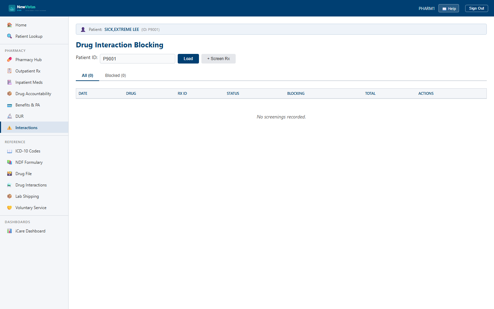

Drug Interaction Blocking
The Drug Interaction Blocking screen runs a new prescription against the patient's existing medications, records every interaction it finds, and blocks the fill on any significant or contraindicated pairing until a pharmacist overrides it with a clinical reason.
Load a patient's screenings
- From the sidebar, open Interaction Screening (or go to
/interaction-blocking). - In the Patient ID field, type the patient ID and press Enter or click Load.
- The screenings load into tabbed views: All and Blocked, each with a count.
- If you arrived with a patient already in context, the screen auto-loads them.

What you see
The screening list
Each row in the All and Blocked tabs shows:
- Date — when the screen was run.
- Drug and Rx ID — the prescription that was screened.
- Status — Not Screened, Cleared, Blocked, or Overridden.
- Blocking and Total — the count of blocking interactions and total interactions found.
- View — opens the Detail tab for that screening.
A blocked screening's row is highlighted, and its blocking count is shown in red.
The detail panel
The Detail tab lists every Interaction Finding — the new drug ingredient, the existing drug ingredient, a severity badge (Minor, Moderate, Significant, Contraindicated), a description, and whether the finding is BLOCKED, a Warning, or already overridden. A cleared prescription shows "No drug interactions found — prescription is cleared."
Screen a new prescription
- With a patient loaded, click + Screen Rx.
- Fill in the required Prescription ID and Drug Name.
- Optionally add the new and existing ingredient IEN/name pairs to test, plus the Screened By pharmacist ID.
- Click Run Screen. The screening is created, the success banner shows its ID, and the Detail tab opens automatically.
Override a blocking interaction
- On a blocked finding, click Override.
- Enter the required Pharmacist ID and a Clinical Reason.
- Click Submit Override. The finding flips to Overridden by your pharmacist ID, and the screening status moves to Overridden.